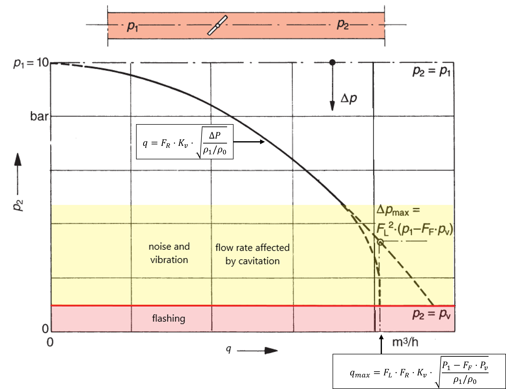

Considerations for Evaluating Control Valve Cavitation
(First draft!!!!)
Essential features of the \(K_v\) value calculation
In many applications, the flow through the control valve is determined by reducers or other accessories (orifice plates) attached to the control valve. When cavitation occurs in a valve, the flow is further limited by the evaporation of the liquid in the valve. Therefore, to determine the flow through the control valve, the following should be analyzed:
- Flow without flow restriction, turbulent flow and no cavitation.
- Flow with flow restriction but without fittings
- Flow with flow restriction and with fittings
Flow without flow restriction, turbulent flow and no cavitation.
\[ Q = K_v \cdot \sqrt{\frac{\Delta P}{(\rho_{1}/\rho_{0})}} \]
Where:
- \(Q\) is the flow; Unit: \(m^3/s\)
- \(\rho_{1}/\rho_{0}\) Relative density (\(\rho_{1}/\rho_{0} = 1.0\) for water at \(15°C\)); Unit: Dimensionless
- \(\Delta P\) Differential pressure between upstream and downstream pressure taps \((P_1-P_2)\); Unit: bar
Flow with flow restriction (Cavitation) but without fittings
The vapor pressure of liquids depends on the temperature. If the static pressure on the fluid falls below this vapor pressure, evaporation occurs. The lowest pressure occurs when throttling in the valve occurs in the so-called “vena contracta.” Depending on the design of the throttle point, there is a greater or lesser pressure recovery. Under certain circumstances, evaporation must also be considered when the outflow pressure \(p_2\) is greater than the vapor pressure of the liquid. Local evaporation, in the vena contracta, initially increases in volume. The cross-section of the choke becomes slimmer, and the calculated flow rate may not be reached if evaporation was not taken into account in the calculation. [@wagner2008].
Cavitation occurs if the evaporation is reversed again by an immediately subsequent increase in pressure. When the evaporation is reversed (condensation) and reaches a particular energy potential, it can quickly damage the throttle body and seat of the valve.
\[ Q = K_v \cdot F_R \cdot \sqrt{\frac{\Delta P}{(\rho_{1}/\rho_{0})}} \]
\[ Q_{max(L)} = K_v \cdot F_L \cdot F_R \cdot \sqrt{\frac{(P_1-F_F \cdot P_v)}{(\rho_{1}/\rho_{0})}} \] The maximum allowable differential pressure for the calculation of control valves without fittings can be calculated as follows:
\[ \Delta{P}_{max(L)}=F^{2}_{L} \cdot (P_1-F_F \cdot p_v) \]
Where:
- \(Q\) is the flow; Unit: \(m^3/s\)
- \(F_L\) Liquid pressure recovery factor of a control valve without attached fittings; Unit: Dimensionless
- \(F_R\) Reynolds number factor; Unit: Dimensionless
- \(F_F\) Liquid critical pressure ratio factor; Unit: Dimensionless
- \(P_v\) Absolute vapor pressure of the liquid at inlet temperature ; Unit: bar
- \(\rho_{1}/\rho_{0}\) Relative density (\(\rho_{1}/\rho_{0} = 1.0\) for water at \(15°C\)); Unit: Dimensionless
- \(\Delta P\) Differential pressure between upstream and downstream pressure taps; Unit: bar
Flow with flow restriction (cavitation) and with fittings
\[ Q = K_v \cdot F_R \cdot F_p \cdot \sqrt{\frac{\Delta P}{(\rho_{1}/\rho_{0})}} \]
\[ Q_{max(LP)} = K_v \cdot F_{LP} \cdot F_R \cdot \sqrt{\frac{(P_1-F_F \cdot P_v)}{(\rho_{1}/\rho_{0})}} \]
The maximum allowable differential pressure for the calculation of control valves with fittings can be calculated as follows:
\[ \Delta{P}_{max(LP)}= \left( \frac{F_{LP}}{F_P}\right)^2 \cdot (P_1-F_F \cdot p_v) \]
